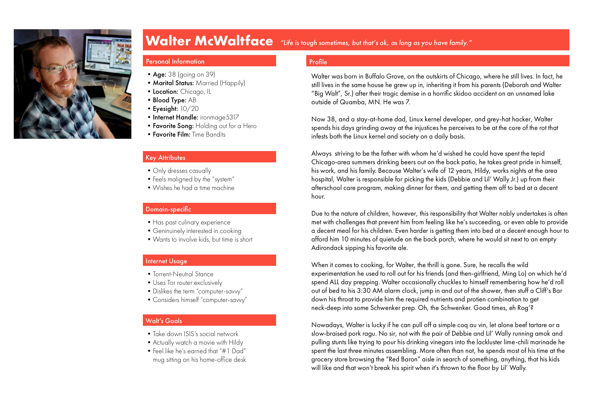
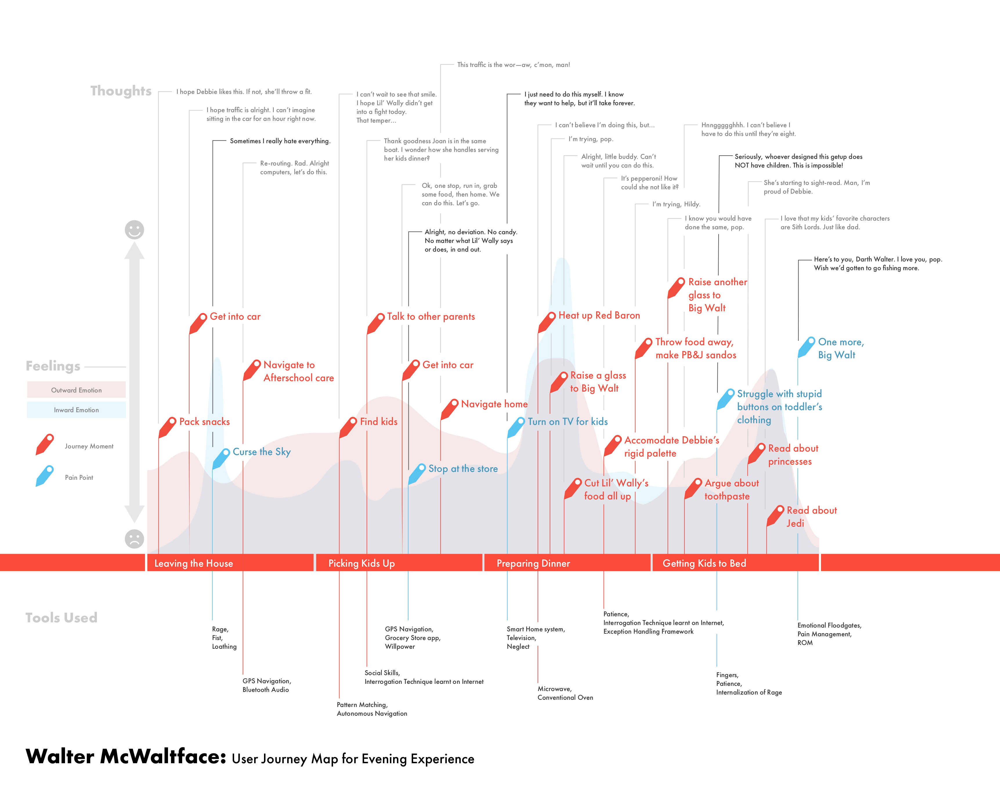

A different kind of User Journey
Early in my days on the design team I took an online certification course in interaction design. I wasn't deluded that taking such a course would make me an interaction designer, but I figured it couldn't hurt to formalize some of the skills I'd learnt on the job.
At one point along the course we had to write a user journey to use as a map against a feature set for some fictitious product. I began by writing a persona to which I thought "I'll map the journey." After writing a few traits about my person, I got bored, and decided to throw my work away.
I began anew with a much more interesting path. A much darker one.
User journeys and personas often reinforce what we expect, or at least desire, to happen.
When we write user stories they often speak to the features we want to see, and are reverse-engineered to sound like they belong to an actual, live person out in the ether who wants our product.
When we write personas, we tend to craft the ideal person for our product, as opposed to the last person we'd ever expect to use our product. This is a problem for two reasons. Firstly, we don't know everyone—so even our perfect persona will be a fictitious human with fictitious needs. Secondly, we don't know who will use our product in the end, so writing personas based on ideal candidates is akin to tying a hand behind one's back before entering a typing contest.
So, I decided to write a classically weird persona whom I would genuinely feel sorry for, were he real. Side note, someone like this certainly exists somewhere. His plight is that he is a virtually single dad (his wife, Hildy works nights) who struggles to pick his kids up from school, get to the store, make dinner, and have them into bed in a reasonable timeframe. He's also terribly alcoholic.
Anyway, without further introduction, I present to you Walter McWaltface.

